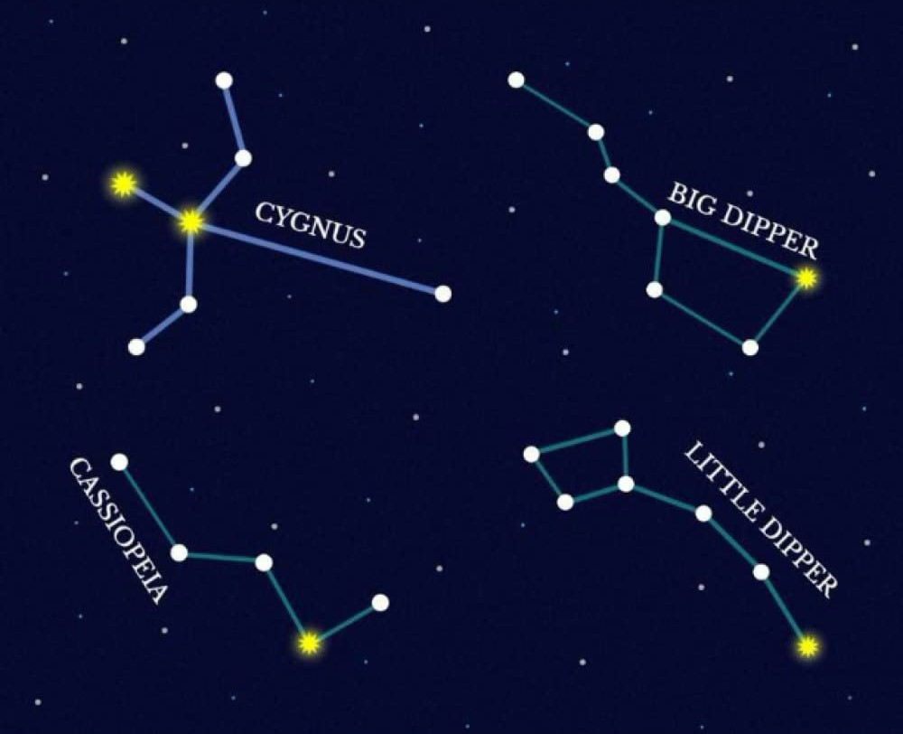
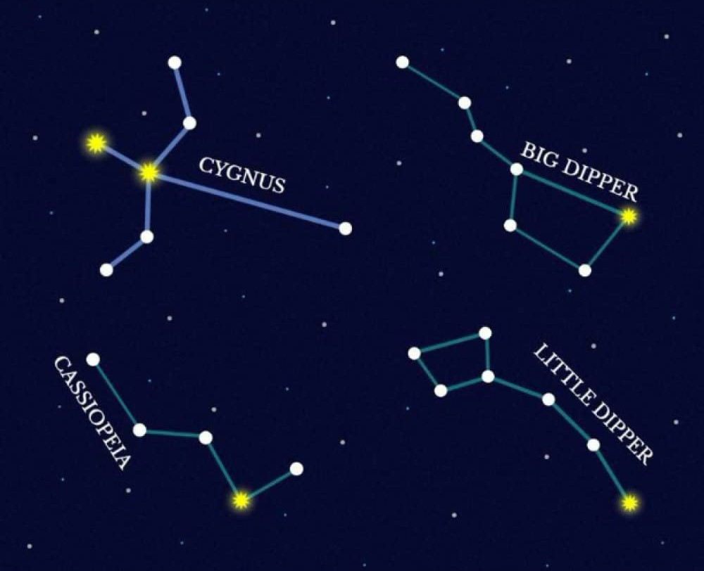

Constellations guide
Click on any constellation to see a complete explanation of it (external link)
Click on any constellation to see a complete explanation of it (external link)
Cassiopeia is a large constellation located in the northern sky. It was named after Cassiopeia, the vain and boastful queen in Greek mythology. Nicknamed the W constellation, Cassiopeia is easily recognizable for the prominent W asterism formed by its five brightest stars. The constellation was first catalogued by the Greek astronomer Ptolemy in the 2nd century, along with other constellations in the Perseus family (except Lacerta). Cassiopeia contains several notable deep sky objects, among them the open clusters Messier 52 and Messier 103, the Heart Nebula and the Soul Nebula, the supernova remnant Cassiopeia A, the star-forming cloud popularly known as the Pacman Nebula, and the White Rose Cluster.
The Little Dipper is an asterism formed by seven bright stars in the constellation Ursa Minor, the Little Bear. It is smaller and fainter than its larger counterpart, the Big Dipper. The asterism has historically played an important role in navigation because it includes Polaris, the North Star. The seven stars that form the Little Dipper are: Polaris (Alpha Ursae Minoris), Kochab (Beta Ursae Minoris), Yildun (Delta Ursae Minoris), Pherkad (Gamma Ursae Minoris), Zeta Ursae Minoris, Eta Ursae Minoris, and Epsilon Ursae Minoris. The brightest of these, Polaris, is the 48th brightest star in the sky. It is the nearest bright star to the north celestial pole. The faintest, Eta Ursae Minoris, shines at magnitude 4.95 and is challenging to see from light-polluted areas. Polaris is very useful in navigation because not only does its location mark true north, but its angle above the horizon helps find the observer’s latitude on Earth. Observers standing on the North Pole see the North Pole star directly overhead. For those in the mid-northern latitudes, the star appears halfway between the zenith and the horizon. Observers near the equator can theoretically see the North Star very close to the horizon if the geography allows it.
The Big Dipper is an asterism formed by seven bright stars in the constellation Ursa Major, the Great Bear. It is one of the most recognizable star patterns in the night sky. The asterism is well-known in many cultures and goes by many other names, including the Plough, the Great Wagon, Saptarishi, and the Saucepan. The seven stars that form the Big Dipper are: Alkaid (Eta Ursae Majoris), Mizar (Zeta Ursae Majoris), Alioth (Epsilon Ursae Majoris), Megrez (Delta Ursae Majoris), Phecda (Gamma Ursae Majoris), Dubhe (Alpha Ursae Majoris), and Merak (Beta Ursae Majoris). In northern latitudes, the Big Dipper is visible throughout the year. It is one of the first star patterns we learn to identify, along with Orion’s Belt, Cassiopeia’s W, and the Northern Cross in Cygnus.
Cygnus constellation is associated with several myths, most frequently the one of the Spartan Queen Leda, who gave birth to two sets of twins, the immortal Pollux and Helen and mortal Castor and Clytemnestra, after being seduced by the god Zeus, who had transformed himself into a swan. The immortal children were fathered by the god and the mortal ones by Leda’s husband, King Tyndareus. Castor and Pollux are represented by the zodiac constellation Gemini. Cygnus is also sometimes identified as Orpheus, the Greek tragic hero who met his end at the hands of the Thracian Maenads for not honouring Dionysus. After his passing, Orpheus was transformed into a swan and placed next to his lyre in the sky. The lyre is represented by the neighbouring constellation Lyra. Cygnus constellation is also sometimes associated with any of the several people called Cycnus in Greek mythology. The most famous ones are Cycnus, the son of Ares who met his end after challenging Hercules to a duel, Cycnus, the son of Poseidon, who fought on the side of the Trojans in the Trojan War, met his end at the hands of Achilles and was transformed into a swan, and Cycnus, a close friend of Phaeton, the mortal son of the Sun god Helios. Of the above three, the myth of Phaeton is the one that is most frequently associated with Cygnus constellation.